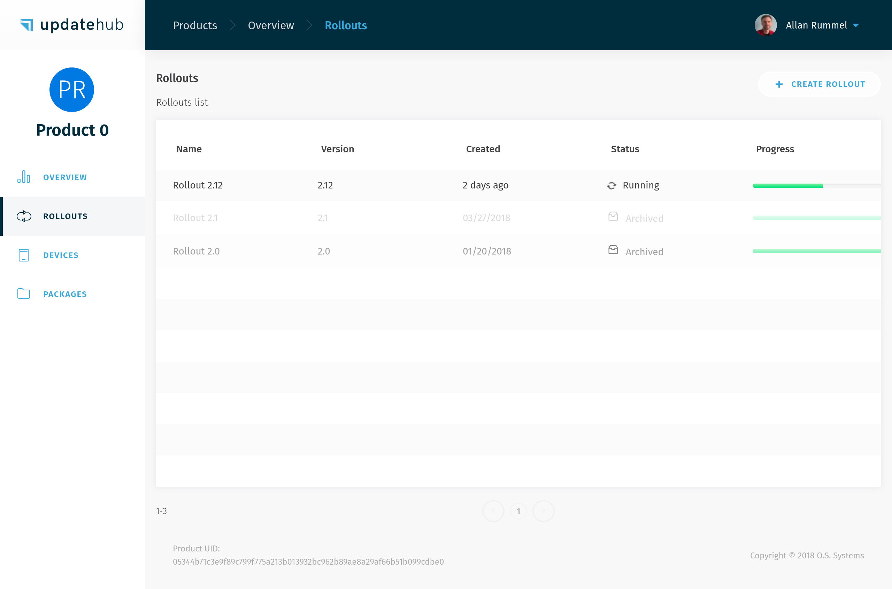

Package and Rollout
As Package and Rollout are strictly linked, we chose to address both in a single section. In summary, we can say that a Rollout is the process of applying a Package to certain Devices but in subsections below more detailed description is given.
Manipulating a Package¶
A Package is an update that will add or remove information to an image that is running on a Device that is in the field.
First, a modified image will be sent to the server with a specific command (see more in uhupkg), and then it is available in the Package subsection, becoming available to be selected in a new Rollout.
In Dashboard, the Package is available after you join in a specific Product.
In this session we will cover:
Viewing the Package list¶
The Packages page, in the same fashion, as the Devices page, exhibit a list with information about the Packages inside a specific Product the user selected, such as:
- Package Unique Identifier (UID)
- Version
- Supported hardware list
- Status
- Size
- Upload date
Each one of these items helps the user find a specific Package. To filter more efficiently the Packages you can select and associate them with the following items during the search:
- Status of each Packages can be found depending on the situation for the Rollout
- Available: the Packages is ready to be downloaded
- Upload in Progress: Packages during the uploaded process
- Removed: Packages that were removed from the Packages list
- Pending Progress: Packages being checked by the server
- Packages with Error: Packages that failed the system checksum
- Version for the Package
- Supported hardware

More information about a Package¶
On the Package Details page the user may have a deeper look into a particular Package and its information.
Beyond the information already present on the Package List, you will find more data about the Objects and their details which are used by the UpdateHub agent during the object's installation.

Once you entered the Package Details you have the option to remove the Package from the Rollout if necessary by clicking on the trash can icon. The Package will be visible and accessible but won't be available anymore.
Administering a Rollout¶
Rollout is the process of sending updates from the server to the Devices registered in a certain Product. To start a Rollout, the update Package must be sent to the server and then the process can be initiated by Product overview or by the subsection Rollout.
In this session we will cover:
Ways to create a Rollout¶
There are two methods to execute the Rollout: the simpler way is to update all the versions of the Devices present on the field at once. The other way is to select which Devices receive the update through the Advanced Mode option.
All Devices¶
To update all Devices in the field to the same version you just need to go to the Overview or Rollouts page and click on Create Rollout. A box to choose the version will appear. After you make this choice just click on Save to initiate the Rollout later or Save and Start launch it straight away.

Select the target Devices¶
The other way is to select which equipment receives the Rollout is using the Advanced Mode option that allows the use of selection filters for Devices.
In Advanced Mode, you can create and name tasks that define the filters that will be applied, selecting which Devices will receive the update. In addition to the available filters, UpdateHub provides Fault Tolerance, which is a percentage that can be set by the user to abort the Rollout automatically if the failure rate exceeds the specified limit.
It is advised to use Fault Tolerance percentage because this is the safety measure.

The Devices can be filtered by their Version, Hardware, Devices Identifier (e.g: the MAC address), and Devices Attributes (e.g: kernel version, device total memory). Finally, Save the Rollout to start later or Save and Start it immediately.
Register of Rollouts¶
The Rollout List exhibits every Rollout available for the Product chosen and brief information about them, such as name, version, creation, status, and progress.

Detailing a Rollout¶
The UpdateHub also gives all the information in detail of each specific Rollout, allowing a complete overview of the individual process. Among the information displayed inside the Rollout Details you will find:
- Version: the version of Rollout that the Device will receive
- Creation Date: the date that the Rollout was created
- Tasks: this area shows each task that is part of the Rollout. Each task includes very information, such as:
- Number of Devices: all the Devices available for the Rollout, including the number of processes concluded, failed, and remaining in one or various tasks are displayed here
- Fault tolerance: that's the percentage limit of failures that can occur during the Rollout until the UpdateHub aborts the running Rollout process, including any pending tasks
- Play/Pause Rollout: whenever the user wants to play or pause the Rollout the option is available unless the process is aborted or the user chooses to archive it
- Archive the Rollout: once the Rollout is not necessary anymore it can be archived and stopped definitely